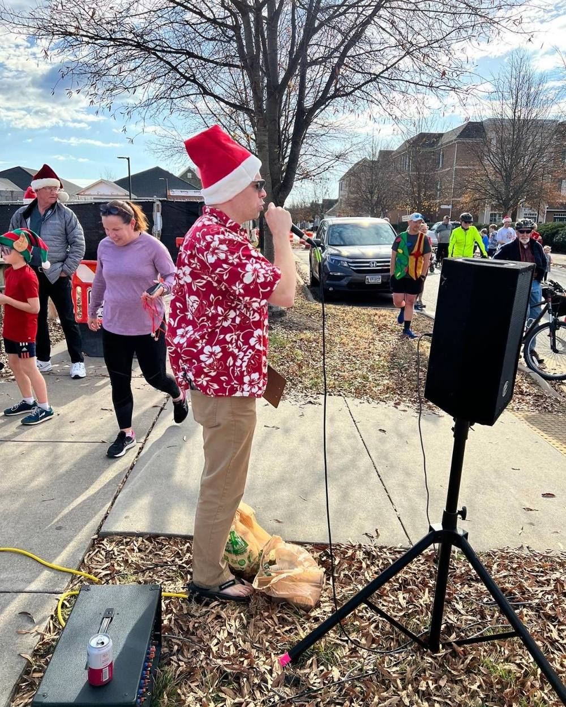

Our story
A Crozet tradition since 2013
The Jingle Jog began in 2013, started by John Anderson, owner of the Crozet Running Shop. It quickly became a holiday favorite for families and friends across town.
When the Crozet Running Shop closed, Old Trail neighbors and friends EB Enfield and Louise Wyatt and their families stepped up as volunteer race directors in 2021, keeping the jingle going for a new generation of runners, walkers and riders.
In the news Crozet Jingle Jog returns for 12th year29 News · December 2025